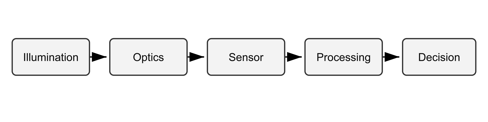

2 Vision engineering: scope, definitions and history
Chapter status: Structural placeholder.
This chapter currently contains the approved heading structure but no reviewed technical content.
2.1 Machine vision, computer vision and image processing
2.1.1 Working definitions and industrial success criteria
This subsection is a deliberately fictional authoring example. It demonstrates Quarto syntax and project conventions; it is not approved handbook content and must not be cited as technical guidance.
Paragraphs, emphasis and terminology
For this fictional example, machine vision is treated as an engineered system that acquires image data, extracts task-relevant information and produces an operational decision. The distinction between image quality and inspection performance is important: an aesthetically pleasing image is not necessarily the most reliable input for an industrial inspection.
The example uses the term inspection score for a dimensionless software output and the symbol \(p_\mathrm{accept}\) for an estimated probability of acceptance. The notation \(x^2\) demonstrates a superscript, while \(I_0\) demonstrates a subscript.
The public Quarto documentation is an example of an external hyperlink.
A footnote may contain a clarification that would interrupt the main argument.1
Bullet lists
A first-level list can describe broad engineering criteria:
- the feature must be visible;
- the measurement must be repeatable;
- the decision must fit within the required cycle time.
A nested list can distinguish criteria from supporting checks:
- Imaging performance
- sufficient contrast at the feature boundary;
- acceptable signal-to-noise ratio;
- controlled geometric distortion.
- Decision performance
- acceptable false-accept risk;
- acceptable false-reject risk;
- traceable pass/fail output.
A numbered workflow can express sequence:
- Define the inspection requirement.
- Characterise the relevant feature.
- Select illumination and optics.
- Acquire representative images.
- validate the complete decision chain.
Equations and equation references
An inline equation can be included within a sentence. For example, the object-space sampling interval is \(s = W/N\), where \(W\) is the field width and \(N\) is the number of pixels across that width.
A displayed and numbered equation can represent an illustrative contrast measure:
\[ C = \frac{I_\mathrm{feature} - I_\mathrm{background}}{I_\mathrm{feature} + I_\mathrm{background}} \tag{2.1}\]
The value calculated using Equation 2.1 is dimensionless. This equation is included only to demonstrate Quarto equation syntax and cross-referencing.
Figure and figure reference
The simplified fictional inspection chain is shown in Figure 2.1.

Table and table reference
?tbl-example-success-criteria shows a small illustrative table. The values are fictional and must not be interpreted as engineering recommendations.
| Criterion | Illustrative target | Evidence |
|---|---|---|
| Feature contrast | \(C > 0.25\) | Image study |
| Repeatability | \(\sigma < 0.10\) mm | Repeatability trial |
| Cycle time | \(t < 100\) ms | Timed production test |
Code block and code-listing reference
A fenced code block can display source code without executing it. Listing 2.1 demonstrates a short Python example.
Callouts
A note callout can provide useful supporting information that is not central to the main argument.
Use semantic identifiers rather than identifiers derived from chapter or section numbers.
The numerical values in this demonstration are fictional. They must not be copied into a real inspection specification.
Definition and example blocks
Definition 2.1 (Industrial success criterion) For this fictional example, an industrial success criterion is a measurable condition used to determine whether a complete vision system is suitable for its intended operational task.
The fictional definition in Definition 2.1 can be followed by a worked example.
Example 2.1 (Illustrative acceptance test) A test set contains 200 representative parts. The system must process every part within the specified cycle time and record the decision, confidence value and image identifier.
Citations and bibliography references
A parenthetical citation uses square brackets, for example (Szeliski 2022). Multiple works can be cited together (Szeliski 2022; Batchelor 2012).
A textual citation can be written as Szeliski (2022), while a citation with a locator can be written as (see Batchelor 2012, chap. 1).
Section and cross-chapter references
A reference to another section in this chapter can use Section 2.2.
A reference to a section in another chapter can use Section 3.1.
Cross-references should be preferred to manually written phrases such as “see Section 2.1”, because Quarto updates the displayed number and hyperlink when the structure changes.
Downloadable supporting file
The fictional dataset used for this example can be downloaded as example inspection results{download}.
Quotation
A useful inspection image is one that supports a reliable decision.
— Fictional Machine Vision Academy example
2.1.2 The four fields: image processing, computer vision, machine vision, AI
Content status: Placeholder.
This subsection has not yet been drafted or technically reviewed.
2.1.3 Relations, overlaps and typical confusions
Content status: Placeholder.
This subsection has not yet been drafted or technically reviewed.
2.2 Historical development
2.2.1 Signal processing and the first digital images (1960s–1970s)
Content status: Placeholder.
This subsection has not yet been drafted or technically reviewed. Comming soon.
2.2.2 Early computer vision and geometric approaches (1970s–1980s)
Content status: Placeholder.
This subsection has not yet been drafted or technically reviewed.
2.2.3 The industrial era: machine vision on the factory floor (1980s–2000s)
Content status: Placeholder.
This subsection has not yet been drafted or technically reviewed.
2.2.4 Statistical learning and the deep-learning turn (2000s–2010s)
Content status: Placeholder.
This subsection has not yet been drafted or technically reviewed.
2.2.5 The regulatory era (2020s onwards)
Content status: Placeholder.
This subsection has not yet been drafted or technically reviewed.
2.3 Industrial application families
2.3.1 Inspection and defect detection
Content status: Placeholder.
This subsection has not yet been drafted or technically reviewed.
2.3.2 Guidance and robot vision
Content status: Placeholder.
This subsection has not yet been drafted or technically reviewed.
2.3.3 Measurement and non-contact gauging
Content status: Placeholder.
This subsection has not yet been drafted or technically reviewed.
2.3.4 Identification: codes, characters and traceability
Content status: Placeholder.
This subsection has not yet been drafted or technically reviewed.
2.3.5 Emerging areas: biometrics, autonomy, medical imaging
Content status: Placeholder.
This subsection has not yet been drafted or technically reviewed.
2.4 System architectures
2.4.1 Embedded and edge vision
Content status: Placeholder.
This subsection has not yet been drafted or technically reviewed.
2.4.2 Smart cameras
Content status: Placeholder.
This subsection has not yet been drafted or technically reviewed.
2.4.3 PC-based and industrial-server systems
Content status: Placeholder.
This subsection has not yet been drafted or technically reviewed.
2.4.4 Cloud and SaaS vision platforms
Content status: Placeholder.
This subsection has not yet been drafted or technically reviewed.
2.4.5 Hybrid and tiered architectures
Content status: Placeholder.
This subsection has not yet been drafted or technically reviewed.
2.4.6 Comparison and selection criteria
Content status: Placeholder.
This subsection has not yet been drafted or technically reviewed.
2.5 The vision system as an engineered chain
2.5.1 The five stages: illumination, optics, sensor, processing, decision
Content status: Placeholder.
This subsection has not yet been drafted or technically reviewed.
2.5.2 Constraint-first engineering: solving with light before software
Content status: Placeholder.
This subsection has not yet been drafted or technically reviewed.
2.5.3 How the chain interacts: propagating a requirement end to end
Content status: Placeholder.
This subsection has not yet been drafted or technically reviewed.
2.5.4 Professional roles and certification landscape
Content status: Placeholder.
This subsection has not yet been drafted or technically reviewed.
2.6 Approaching a vision problem: a design framework
2.6.1 From inspection requirement to imaging specification
Content status: Placeholder.
This subsection has not yet been drafted or technically reviewed.
2.6.2 Characterising the feature: contrast, scale, geometry, tolerance
Content status: Placeholder.
This subsection has not yet been drafted or technically reviewed.
2.6.3 Detection versus measurement: how the task drives every later choice
Content status: Placeholder.
This subsection has not yet been drafted or technically reviewed.
2.6.4 A worked decision path, cross-referenced to later chapters
Content status: Placeholder.
This subsection has not yet been drafted or technically reviewed.
This is a demonstration footnote. It is not an approved technical definition.↩︎